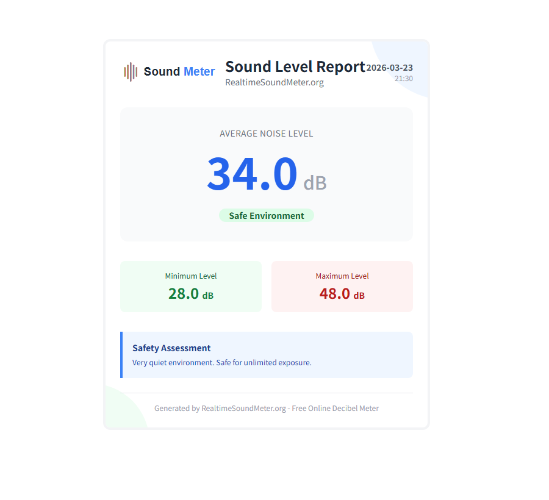

Dashboard für Echtzeit-Schallpegelmesser
✅ Status: Bereit zum Messen
Profi-Tipp: Für eine genaue Analyse messen Sie mindestens 30-60 Sekunden, um plötzliche Geräusche auszugleichen.
Hinweis: Referenz-Schätzwert. Mikrofone unterscheiden sich; wenn der Basiswert unplausibel ist, nutzen Sie „Messwert abgleichen“. Ruhiger Raum ≈ 30–40 dB, Gespräch ≈ 60 dB, Verkehr ≈ 80 dB.
Empfohlene Hardware (optional)
Für reproduzierbarere Messwerte oder Vergleiche über längere Zeit kann ein eigenständiger Schallpegelmesser hilfreich sein.
Digitaler Schallpegelmesser
BestsellerPraktische Option für Zuhause/Büro, konsistente A/B-Vergleiche und nachvollziehbare Messroutinen.
- Sinnvoll, wenn Sie stabilere Werte als mit einem Browser-Messer möchten.
- Messen Sie mit festem Abstand und gleicher Routine (Dauer, Position).
- Für behördliche/gesetzliche Messungen nutzen Sie zertifiziertes Equipment und dokumentierte Verfahren.
Offenlegung: Als Amazon-Partner verdienen wir an qualifizierten Verkäufen.
Schallpegel-Leitfaden
Hinweis: Die Dezibel-Skala ist logarithmisch - je 10 dB Anstieg bedeutet etwa 10-fache Intensität.
Anleitung
-
1Mikrofon zulassenKlicken Sie auf "Messung starten" und erlauben Sie den Zugriff auf Ihr Mikrofon.
-
2Lärmpegel überwachenSehen Sie dB-Werte in Echtzeit. Empfehlung: Messen Sie ca. 1 Min. lang.
-
3Stoppen & BerichtKlicken Sie auf "Messung stoppen" und dann "Bericht speichern" für ein PDF.
-
4HandelnNutzen Sie die Daten, um schädliche Lärmquellen zu identifizieren und Ihr Gehör zu schützen.
Sichere Expositionszeit nach Dezibelpegel
Tabelle und Rechner sind eine schnelle Orientierung, um Pegel und Zeit zusammen zu betrachten und Messungen reproduzierbar zu vergleichen. Sie sind als Richtwert gedacht, nicht als Compliance-Messung. Referenz: NIOSH/CDC.
Schneller Expositionsrechner
Schätzt eine maximale tägliche Expositionszeit mit 85 dB = 8 Stunden und der 3-dB-Regel (Orientierung, keine Compliance-Messung).
- Nutzen Sie den Mittelwert (nicht kurze Spitzen) für Entscheidungen.
- Halten Sie Abstand und Aufbau konstant, um Vergleiche zu ermöglichen.
- Für behördliche/gesetzliche Messungen: zertifizierte Geräte und dokumentierte Verfahren.
Sicher für den ganzen Tag
NIOSH-Empfehlung für 8 Stunden Arbeitstag
Rasenmäher, Motorrad
Föhn, laute Elektrowerkzeuge
Rockkonzert, Sirene
Feuerwerk, Düsenjet - Exposition vermeiden
⚠️ Wichtig: Pro 3 dB Anstieg über 85 dB halbiert sich die sichere Expositionszeit. Mehr dazu bei NIDCD.
Dezibel und Schallmessung verstehen
Ein Schallpegelmesser (Dezibelmesser) misst den Schalldruckpegel (SPL) in Dezibel (dB). Unser Online-Tool nutzt das Mikrofon Ihres Geräts, um Umgebungsgeräusche zu erfassen und Echtzeitmessungen zu liefern.
Warum Dezibel wichtig sind: Die Dezibel-Skala ist logarithmisch – jede Erhöhung um 10 dB entspricht etwa der 10-fachen Schallintensität und fühlt sich etwa doppelt so laut an. Das bedeutet, 80 dB sind nicht nur etwas lauter als 70 dB, sondern deutlich intensiver.
🏥 WHO-Empfehlung: Die Weltgesundheitsorganisation empfiehlt, Lärmpegel über längere Zeiträume unter 70 dB zu halten, um Hörverlust vorzubeugen. Geräusche über 85 dB können bei längerer Einwirkung das Gehör schädigen.
Wie Lärm das Gehör schädigt: Laute Geräusche können die feinen Haarzellen im Innenohr schädigen. Diese Zellen regenerieren sich nicht, sodass Schäden dauerhaft sind. Hohe Intensität oder lange Dauer führen zu:
- Mechanischer Schädigung der Haarzellen im Innenohr
- Überreizung der Hörnerven
- Lärmschwerhörigkeit (NIHL)
- Tinnitus (Ohrgeräusche) und Überempfindlichkeit
Referenz: Gesundheitsbehörden.
Datenschutz & Sicherheit
Ihre Privatsphäre hat Priorität. Die gesamte Audioverarbeitung erfolgt lokal in Ihrem Browser. Es werden keine Audiodaten aufgezeichnet, gespeichert oder auf unsere Server hochgeladen. Die Funktion "Bericht speichern" generiert die PDF-Datei direkt auf Ihrem Gerät basierend auf den Statistiken (Min, Max, Ø) Ihrer Sitzung.
Was uns von anderen Online-Schallpegelmessern unterscheidet
Fokus auf nachvollziehbare Vergleiche und saubere Dokumentation – nicht nur ein Live-Wert.
- Bericht lokal erzeugen: „Bericht speichern“ erstellt die Datei auf Ihrem Gerät; Roh-Audio wird nicht hochgeladen.
- Mehr Kontext: Frequenzspektrum + Verlauf, um Trends und Peaks zu verstehen.
- Messungen wiederholbar machen: SOP-Tipps, Beispielberichte und ein Log-Template für konsistente Setups.
- Transparenz: Methodology, Accuracy und Changelog zeigen Vorgehen und Änderungen.
- Privatsphäre: siehe Privacy (Datenfluss und Dienste).
Beispielberichte (Ergebnisse interpretieren)
Statische Vorschauen aus derselben „Bericht speichern“-Vorlage, um Min/Ø/Max und eine saubere Dokumentationsroutine zu zeigen.
Altbau-Schlafzimmer (nachts) – Nachtruhe-Fokus
Niedrig
Interpretation: In Mehrfamilienhäusern sind Max-Werte oft kurze Ereignisse (Trittschall, Tür im Treppenhaus). Für den Schlaf ist der Ø-Wert über vergleichbare Messfenster meist aussagekräftiger.
- Zur gleichen Uhrzeit messen (z. B. 22–23 Uhr).
- Fenster/Rollläden und Lüftung/Heizung notieren.
- 3× wiederholen und Ø vergleichen (nicht nur Max).
Staubsauger (Stufe 1 vs. Turbo) – 1 m
Erhöht
Interpretation: Ideal für Vergleichstests (neues Gerät, neue Bodendüse, anderer Leistungsmodus). Das Setup zählt mehr als der „absolute“ dB-Wert.
- Bodenart notieren (Teppich vs. Hartboden).
- Leistungsstufe dokumentieren (z. B. Eco/Turbo).
- Abstand/Position markieren und Ø vergleichen.
Straßenbahn & Verkehr (Fenster gekippt)
Laut
Interpretation: Besonders in Städten schwanken Werte stark (Bus, Tram, Motorrad). Für einen fairen Vergleich: gleiche Uhrzeit, gleiche Position, gleiches Messfenster.
- Rushhour vs. Abend getrennt messen.
- Fensterstellung dokumentieren (zu/gekipp/t offen).
- Ø für Dauerbelastung, Max für einzelne Ereignisse.
Messprotokoll (Copy/Paste)
Hilft, Messungen über Tage und Geräte hinweg reproduzierbar zu vergleichen.
date,time,location,distance,device,avg_db,max_db,notes 2026-03-23,21:30,bedroom,1m,phone,34,48,window closed; HVAC off 2026-03-24,21:30,bedroom,1m,phone,36,52,window closed; light rain 2026-03-25,21:30,bedroom,1m,phone,33,46,window closed; quiet night
Gesundheitliche Auswirkungen von Lärmbelastung
Lärm betrifft nicht nur das Gehör – langfristige Exposition kann Schlaf, Stress und die allgemeine Gesundheit beeinflussen. Referenz: WHO Europa.
Hörverlust (NIHL)
Exposition gegenüber ≥85 dB für 8+ Stunden kann dauerhafte Schäden verursachen.
CDC/NIOSH Richtlinien →Stress & Angst
Chronischer Lärm erhöht Stresshormone und das Risiko für Angststörungen.
WHO Forschung →Schlafstörungen
Nächtlicher Lärm über 40 dB kann Schlafqualität und -dauer erheblich stören.
Schlaf-Richtlinien →Herz-Kreislauf-Risiko
Langfristige hohe Lärmbelastung kann das Risiko für Herzkrankheiten erhöhen.
WHO Studien →Kognitive Auswirkungen
Lärmverschmutzung kann Konzentration, Gedächtnis und Lernfähigkeit beeinträchtigen.
HHF Ressourcen →Kindesentwicklung
Kinder sind anfälliger für lärmbedingte Lern- und Verhaltensprobleme.
WHO Erkenntnisse →🛡️ Praktische Schutz-Tipps
- Halten Sie die tägliche Lärmbelastung wenn möglich unter 70 dB
- Tragen Sie Gehörschutz (Ohrstöpsel/Kapselgehörschutz) in Umgebungen ≥85 dB
- Begrenzen Sie die Zeit in sehr lauten Umgebungen
- Nutzen Sie Lärmüberwachungstools, um Schallpegel zu verfolgen
- Gönnen Sie Ihren Ohren Ruhepausen nach lauter Exposition
Referenz: NIOSH/CDC.
Praktische Anwendungsmöglichkeiten
Dieser kostenlose Online-Schallpegelmesser verwandelt Ihren Browser in ein funktionales Lärmmessgerät. Obwohl er kein kalibriertes Klasse-1-Messgerät ersetzt, dient er als hervorragende Referenz für Alltagssituationen, in denen das Verständnis von Lärmpegeln Ihre Gesundheit und Produktivität verbessern kann.
🏠 Zuhause & Wohnen
- Gerätetest: Prüfen Sie, ob Ihre neue Spülmaschine so leise ist wie beworben.
- Nachbarschaftslärm: Messen Sie objektiv, wie laut die Renovierung oder Musik des Nachbarn in Ihrem Wohnzimmer ist.
- Schlafumgebung: Stellen Sie sicher, dass Ihr Schlafzimmer für optimale Schlafqualität unter 30-40 dB bleibt.
💼 Arbeit & Studium
- Büro-Ablenkungen: Identifizieren Sie Lärmspitzen im Großraumbüro, um Fokuszeiten besser zu planen.
- Lernbereiche: Finden Sie die ruhigste Ecke in der Bibliothek. Ideal zum Lernen sind oft 40-50 dB.
- Remote Work: Testen Sie Ihren Hintergrundgeräuschpegel vor wichtigen Videokonferenzen.
- Dokumentation: Nutzen Sie "Bericht speichern", um einen PDF-Nachweis über Lärmpegel zu erstellen.
🎧 Audio & Unterhaltung
- Sicheres Hören: Kalibrieren Sie Ihre Lautsprecher, um bei Filmen im sicheren Bereich von 70-80 dB zu bleiben.
- Event-Monitoring: Prüfen Sie, ob das Konzert oder der Club gefährliche 100 dB überschreitet.
- Gaming-Setup: Messen Sie Lüftergeräusche unter Last, um Ihren Silent-PC zu optimieren.
🩺 Gesundheit & Wellness
- Tinnitus-Management: Helfen Sie, Umgebungen zu identifizieren, die Ohrgeräusche auslösen könnten.
- Baby-Sicherheit: Stellen Sie sicher, dass das Kinderzimmer beruhigend leise ist.
- Stressreduktion: Korrelieren Sie Ihr Stresslevel mit Umgebungslärm, um Ihren sensorischen Input besser zu steuern.
Lokale Beispiele (Deutschland): wann ist Messen besonders sinnvoll?
Wenn Sie Abstand und Position konstant halten, werden Trends und Vergleiche deutlich zuverlässiger. Diese typischen Situationen lassen sich gut dokumentieren.
Häufige Szenarien
- Mietwohnung: Bohrarbeiten/Sanierung, Trittschall, laute Haushaltsgeräte – Vergleich über mehrere Tage.
- Stadtverkehr: Straßenbahn, Motorrad, Lieferverkehr – Innenraumwerte mit offenem vs. geschlossenem Fenster.
- Homeoffice: Grundrauschen im Arbeitszimmer (Lüftung, Straße) und Peak-Ereignisse (Müllabfuhr).
Dokumentationsroutine
- Notieren Sie Ort, Uhrzeit, Abstand (z. B. 1 m) und ob Türen/Fenster offen waren.
- Messen Sie 30–60 s, wiederholen Sie 3× und vergleichen Sie Mittelwerte statt Einzelspitzen.
- Nutzen Sie „Bericht speichern“ und ergänzen Sie Kontext (Raumgröße, Position im Raum, Messhöhe).
Lokale Hinweise & weiterführende Quellen
- Rechtslage ist oft kommunal geregelt (z. B. Hausordnung, Gemeinde-/Stadtordnung). Für wiederkehrende Störungen hilft ein Messprotokoll über mehrere Tage.
- Grundlagen & Einordnung: Umweltbundesamt (Lärm)
- Gesetzestexte (DE): BImSchG (Bundes-Immissionsschutzgesetz)
Wie es funktioniert: Browser-basierte Audioanalyse
Im Gegensatz zu herkömmlichen Schallpegelmessern mit spezieller Hardware nutzt dieses Tool die in modernen Browsern (Chrome, Edge, Safari, Firefox) integrierte Web Audio API. Hier ist der Prozess vereinfacht:
- Signalaufnahme: Der Browser fordert Zugriff auf das Mikrofon Ihres Geräts an.
- Digitales Sampling: Die analogen Schallwellen werden tausendfach pro Sekunde in digitale Datenpakete umgewandelt.
- Frequenzanalyse: Wir verwenden die Fast Fourier Transformation (FFT), um die Intensität verschiedener Frequenzen zu analysieren.
- RMS-Berechnung: Der Root Mean Square (RMS) wird berechnet, um die durchschnittliche Leistung des Audiosignals zu bestimmen.
- Dezibel-Mapping: Dieser Rohwert wird mittels eines Kalibrierungsalgorithmus auf die Dezibel-Skala (dB) abgebildet.
Hinweis zur Kalibrierung: Da jedes Mikrofon (Smartphone, Laptop, Webcam) eine andere Empfindlichkeit hat, kann ein webbasiertes Messgerät ohne externe Hardware-Kalibrierung nie 100% genau sein. Wir verwenden eine "Best-Fit"-Kurve, die auf gängige Verbrauchergeräte abgestimmt ist, um nützliche relative Messwerte zu liefern.
Häufig gestellte Fragen (FAQ)
Ist dieser Schallpegelmesser genau?
Dieser Online-Messer liefert gute Schätzwerte, kann aber nicht mit professionellen Geräten mithalten. Die Genauigkeit hängt von Ihrem Mikrofon ab. Für präzise Messungen sollten Sie professionelles Equipment nutzen.
Dezibel-Pegel vergleichen →Warum muss ich den Mikrofonzugriff erlauben?
Das Tool benötigt Zugriff, um Umgebungsgeräusche zu messen. Ihr Audio wird lokal im Browser verarbeitet und niemals aufgezeichnet oder gesendet. Ihre Privatsphäre ist geschützt.
Welcher Geräuschpegel ist sicher?
Praktischer Richtwert: Versuchen Sie, länger anhaltende Pegel unter 70 dB zu halten. Wenn Sie sich 85 dB nähern, wird die Expositionsdauer entscheidend – mit steigenden Pegeln sinkt die sichere Zeit schnell.
NIOSH Richtlinien →Kann ich das Tool mobil nutzen?
Ja! Es funktioniert auf Desktop und Mobilgeräten (iOS Safari, Chrome Mobile etc.). Einfach Zugriff erlauben. Beachten Sie, dass die Mikrofonqualität variieren kann.
Wie schädigt Lärm das Gehör?
Laute Geräusche schädigen die Haarzellen in der Hörschnecke. Einmal zerstört, wachsen sie nicht nach, was zu dauerhaftem Hörverlust führt. Hohe Intensität beschleunigt diesen Prozess. Wenn Sie sich Sorgen um Ihre Hörgesundheit machen, sollten Sie unseren kostenlosen Online-Hörtest machen.
Mehr bei NIDCD →Was ist die 3-dB-Regel?
Die NIOSH 3-dB-Regel besagt: Pro 3 dB Anstieg halbiert sich die sichere Expositionszeit. Beispiel: 85 dB = 8 Std., 88 dB = 4 Std. Das zeigt, warum kleine Erhöhungen wichtig sind.
📚 Offizielle Quellen & Referenzen
Alle Informationen auf dieser Seite basieren auf Richtlinien und Forschung international anerkannter Gesundheitsorganisationen:
🏛️ NIOSH/CDC
National Institute for Occupational Safety and Health
🌍 WHO (Weltgesundheitsorganisation)
Richtlinien für sicheres Hören und Prävention
🔬 NIDCD (NIH)
National Institute on Deafness and Other Communication Disorders
👂 Hearing Health Foundation
Dezibel-Expositionstabelle und Aufklärung
🇪🇺 WHO Europa
Forschung zu Umgebungslärm und Gesundheit
📰 Forbes Health
Leitfaden zu Dezibelpegeln und Hörgesundheit
Zuletzt aktualisiert: Januar 2026. Wir überprüfen unsere Inhalte kontinuierlich auf Übereinstimmung mit aktuellen wissenschaftlichen Richtlinien.